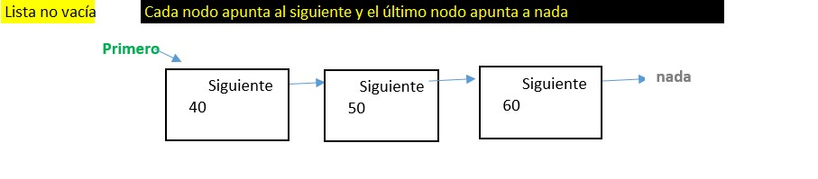
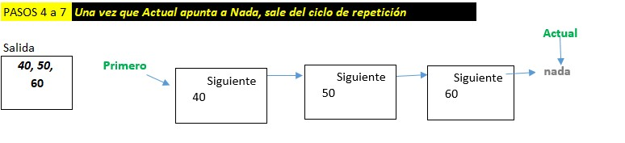

Estructura Lista simple
DESCRIPCIÓN
Se formará de una lista enlazada de nodos, donde cada nodo contiene uno o más
datos y además un apuntador al siguiente nodo de la lista.


En la anterior lista tenemos una cantidad indeterminada de nodos, de los cuales
podemos saber que:
- la lista inicia en el apuntador que señala al primer nodo,
- el ultimo nodo ya no apunta a otro nodo, sino a nada,
- que utiliza memoria dinámica.
Cada vez que creemos un nodo, estableceremos dos propiedades de él
- el dato que almacene y
- que su apuntador señale a Nada
AGREGAR NODOS
Tendremos dos formas de agregar nodos a la lista enlazada.
- Agregar nodos al inicio de la lista
- Agregar nodos al final de la lista
AGREGAR UN NODO AL INICIO DE LA LISTA
Al agregar un nodo al inicio de la lista, hacemos que el nuevo Nodo apunte a Primero
y que el apuntador Primero apunte al nuevo Nodo
- PASO 1: Crear nodo Nuevo
- PASO 2: Nuevo --> Primero
- PASO 3: Primero --> Nuevo
AGREGAR UN NODO AL FINAL DE LA LISTA
Al agregar un nodo al final de la lista, ve si esta vacia, si lo esta, será el primer
nodo de la lista. Si no esta vacia, busca el ultimo nodo y hace que este apunte al
nuevo Nodo
- PASO 1: Crear nodo Nuevo
- PASO 2: Si esta vacia, Hacer Primero apunta a Nuevo
- PASO 3.1: Si no esta vacia, recorre la lista hasta encontrar el ultimo
- PASO 3.2: Pasa por cada nodo tras nodo hasta llegar al que apunta a null
- PASO 3.3: - Hace el ultimo nodo apunte al nuevo
QUITAR EL PRIMER NODO DE LA LISTA
Solo hace este trabajo, si la lista no esta vacia.
Hace que el apuntador Primero apunte al siguiente de este, por lo cual al que apuntaba
- PASO 1: Inicializa la variable dato que regresará el valor convertido a String del
posible contenido en Primero, es decir, la dirección del primer nodo de la lista
- PASO 2: Si la lista no esta vacía, hace lo siguiente:
- PASO 2.1: Guarda en la variable actual la referencia que contiene el Nodo Primero
- PASO 2.2: Hace que el Nodo Primero tome la referencia del apuntador Siguiente de este mismo Nodo
- PASO 2.3: Copia a la variable dato, el valor convertido a String del nodo al que referenciaba el nodo Primero,
que se había respaldado o guardao en el paso 2.1
QUITAR EL NODO QUE ESTA AL FINAL DE LA LISTA
Solo hace este trabajo, si la lista no esta vacia.
Hay dos posibilidades:
- Si solo existe un nodo, i.e. si el apuntador siguiente del 1er nodo apunta a nada, entonces:
- Convierte a String el dato del primer nodo
- Hace que el apuntador Primero apunte a nada, dado que estará borrando el único nodo de la lista
- O si existen más nodos, entonces:
- Recorre la lista hasta encontrar el ultimo nodo
- Convierte a String el dato almacenado en el último nodo
- Hace que el pernúltimo nodo apunte a nada, para quitar la referencia que tenía hacia el último Nodo
- Regresa el dato contenido en el último nodo
- PASO 1: Inicializa la variable dato que regresará el valor convertido a String del
posible contenido en Primero, es decir, la dirección del primer nodo de la lista
- PASO 2: Si la lista no esta vacía, hace lo siguiente:
- PASO 2.1: Si solo hay un nodo en la lista, o sea que el apuntador Siguiente de Primero apunta a nada
- PASO 2.1.1: Convierte a String el dato almacenado en el Primer y único Nodo de la lista
- PASO 2.1.2: Hace que Primero apunte a nada, para borrar el único nodi de la lista.
- PASO 2.2: Si existe más de un nodo en la lista, hace lo siguiente:
- PASO 2.2.1: Crea variables Anterior y Actual para que ambas referencíen al primer npdo de la lista
- PASO 2.2.2: Con un ciclo mientras el apuntador Siguiente de Actual no sea nulo, buscar el ultimo nodo
- PASO 2.2.2.1: Va cambiando la referencia del nodo anterior a donde apunta actual
- PASO 2.2..2.2: También va actualizando la referencia del nodo Actual al Siguiente de actual
- PASO 2.2.3: Al salir del ciclo, habrá localizado al último nodo y tomará de él el valor que almacena
- PASO 2.2.4: Hace que el apuntador Siguiente de Anterior apunte a nada, así deja de apuntar al último nodo
- PASO 2.3: Regresa el dato del último nodo o null si la lista ya estaba vacía
QUITAR UN NODO QUE CONTENGA UN CIERTO DATO
Este método regresará el valor del dato que borró o null si no lo encontró
- Indica que el dato a regresar es nulo, por si no lo encuentra
- Primero verifica que no este vacía la lista:
- Enseguida, invoca a un método para buscar el nodo que contenga un valor dado, a lo cual dicho método regresará
tres datos:
1) si lo encontró o no, 2) el nodo donde lo encontró y 3) el nodo anterior al nodo lo encontró
- A continuación verifica si encontró un nodo con el valor a borrar:
- Si lo encontró, entónces verifica si es el primer nodo de la lista
- Si lo es, actualiza el apuntador Primero para que señale al siguiente de este nodo.
- Si no es el primer nodo, entónces hace que el el nodo anterior al que se borrará
apunte al que el ndo a borrar indica que es el siguiente a él
- En ambos casos, queda sin referencia (sin que algun nodo le apunte) el nodo que se deseaba borrar.
- Si no lo encontró, va a regresar null y no borrará ningún nodo
BUSCAR UN NODO QUE CONTENGA UN CIERTO DATO
Este método regresará el valor del dato que borró o null si no lo encontró
- Indica que el dato a regresar es nulo, por si no lo encuentra
- Si la lista no está vacía hace lo siguiente:
- Invoca a un método para buscar el nodo que contenga un valor dado, a lo cual dicho método regresará
tres datos:
1) si lo encontró o no, 2) el nodo donde lo encontró y 3) el nodo anterior al nodo lo encontró
- A continuación verifica si encontró un nodo con el valor buscado:
- Si lo encontró, entonces:
- Recupera en un objeto nodo al elemento #2 del arreglo, que corresponde al
nodo que contiene el dato
- Ahora convierte a String el dato del nodo localizado
- Al final regresa el String del dato localizado o null si no encontró.
LOCALIZAR EL NODO QUE CONTENGA UN CIERTO DATO
Este método regresará un arreglo con tres datos:
- Verdadero o Falso si es que halló un Nodo;
- El nodo que contiene el dato buscado
- El nodo anterior al nodo que contiene el dato
- Inicializa tres variables, que al prinicipio indican que aún no encuentra nada
- Crea un nodo que contenga el dato a buscar, para comparacion vs. cada nodo a revisar
- Repite los siguientes pasos si no encuentra el dato ni llega a un nodo nulo
- Compara el valor del nodo actual vs. el dato que busca
- Si lo encuentra lo indica con valor True, sino false
- Si no, recorre el apuntador actual hacia el siguiente nodo, pero antes asigna a Anterior la referencia del nodo actual.
- Vuelve al probar si el ciclo termina o sigue recorriendo la lista enlazada
- Al salir del ciclo, coloca en el arreglo de datos lo siguiente:
- El primer elemento del arrego será True o False
- El segundo elemento será la referencia al nodo que podría contener el dato buscado
- El tercer elemento del arreglo, será el nodo anterior al que tuviera el dato,
METODO PARA MOSTRAR LOS DATOS DE LA LISTA SIN RECURSIVIDAD
Este método regresará un String con los valores de los datos almacenados en la lista.
- Inicializa una variable Salida con nada
- Valida que la lista no esta vacia, o en caso contrario asigna a resultado un mensaje que no tiene datos
- Si no esta vacía la lista
- Inicializa la variable actual con la referencia al primer nodo de la lista
- Hace un ciclo para detenerse hasta que actual sea nulo.
- Dentro del ciclo, coloca en Salida al valor almacenado en la referencia del nodo actual.
- Hace que actual apunte al siguiente nodo de la lista
- Al salir del ciclo, va al final de método.
- Al final del método, regresa la variable Salida con la lista de datos o con un mensaje de lista vacía.

METODO PARA MOSTRAR LOS DATOS DE LA LISTA CON RECURSIVIDAD
Este método regresará un String con los valores de los datos almacenados en la lista.
- Inicializa una variable resultado con nada
- Valida que la lista no esta vacia, o en caso contrario asigna a resultado un mensaje que no tiene datos
- Si no esta vacía, invoca a un método al que le pasa la referencia al primer nodo de la lista.
- Retorna la variale resultado con la lista de nodos o un mensaje de lista vacia
METODO PARA DIRIGIR EN DONDE AGREGAR EL NODO
Se desea con este métodos interpretar el resultado de los distintos métodos para agregar datos en esta Lista.
- Este metodo recibe 2 datos: un valor entero que indica si desea agregar al inicio de la lista o al final y el segundo parámetro es
el dato que desea agregar.
- Coloca en Salida un valor vacio. Se actualizará con el valor del nodo agregado o con un mensaje de error
- Valida si indicó correctamente el valor que dirige hacia invocar agregar al inicio o al final. En caso de que no este correcto el valor,
generar un mensaje de error que regresa como resultado del método
- Una vez que ejecute el método seleccionado para agregar un dato, valida si dicho método regresa como resultado un cero, el cual indica
que el método no terminó con un error
- Es entonces invoca al metodo que obtiene los valores de los datos almacenados en la lista.
- En caso de que el valor retornado del método para agregar datos no sea cero, guarda en Salida un mensaje de error
- Al final este método retorna un String con la lista de nodos actualizada o un mensaje de error.
METODO PARA DIRIGIR EN DONDE ELIMINAR UN NODO
Se desea con este métodos interpretar el resultado de los distintos métodos para borrar datos en esta Lista.
- Este metodo recibe 2 datos: un valor entero que indica si desea borrar al inicio de la lista o al final o
el nodo que contiene un dato; el segundo parámetro es el dato que desea borrar
- Coloca en Salida un valor vacio. Se actulizará con el valor del nodo borrado o con un mensaje de error
- Valida si indicó correctamente el valor que dirige hacia invocar borrar al inicio o al final o el que tenga un cierto dato.
- En caso de que no este correcto el valor, generar un mensaje de error que regresa como resultado del método
- Una vez que ejecute el método seleccionado para borrar un dato, valida si dicho método regresa como resultado un cero, el cual indica
que el método no terminó con un error
- Es entonces invoca al metodo que obtiene los valores de los datos almacenados en la lista.
- En caso de que el valor retornado del método para borrar datos no sea cero, guarda en Salida un mensaje de error
- Al final este método retorna un String con la lista de nodos actualizada o un mensaje de error.